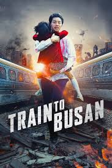

Ini adalah kelanjutan dari kisah Adikku. Aku dan adikku tidak pernah bersama.
Eh maksudnya ga pernah satu sekolah. Dari TK sampai SMA/SMK. Aku sekolah di SMA,
Sedangkan adikku di SMK. Aku SMP, adikku MTS. SD nya sama-sama negeri tapi beda sekolah.
Sampai kepribadian kami pun juga 180 derajat berbanding terbalik. Tidak pernah sama.
Akan tetapi kami selalu saling curhat, berbagi makanan, dan juga saling melengkapi.
Adikku memiliki sifat yang suka yang namanya perdebatan, sedangkan aku tidak.
Kami sering berbeda pendapat dan berdebat. Ia juga sering berdebat dengan orang tua.
Adikku juga mudah marah jika disinggung atau diberi nasehat. Berbeda denganku yang menerima
dan mencerna kembali apa yang orang sampaikan. Begitulah adikku, kalau bukan pemarah berarti
bukan adikku, LOL.
Hobi yang saling melengkapi
Mengapa judulnya seperti itu? Karena memang kami selalu melengkapi antar satu sama lain.
Jika adikku suka memasak, aku suka bersih-bersih sisa piring yang digunakan. Jika adikku suka
bergaya modis dan berdandan, aku suka memotretnya dengan handphone ku. Begitulah keseharian
kami. Kalau kata Bapak dan Mommy, kita sebagai saudara jangan saling bermusuhan, kalau bisa harus saling melengkapi
Oiya, Fyi, panggilan orang tua kami lucu tau, harusnya kan Ibu dan Bapak, tapi kami malah
Mommy dan Bapak. Sangatlah membagongkan bukann, hehe.
Momen Nonton Film Horror
Adikku suka banget nonton film horror Indonesia. Mulai dari film Danur 1 hingga 3 pun sudah dia tonton semua.
Dia sepertinya cinta film Indonesia, karena tiap aku ajak dia nonton film barat, dia pasti tidak mau join.
Akan tetapi, satu hal yang perlu kalian tahu, adikku kalau tidak berani nonton film horror sendirian.
Harus ada yang menemani dia saat nonton, minimal ada oranglah disampingnya biar gak horror-horror amat katanya.

Poster Film Train to Busan
Ada momen saat aku masih duduk di bangku SMP dan adikku masih SD. Saat itu kami ditinggal berdua dirumah oleh orang
tua kami. Lalu kami rencana mau nonton film bareng sambil menunngu orang tua kami pulang. Kami mulai scroll di aplikasi
nonton dan mencari sebuah film. Kami menemukan film zombie asal Korea yang judulnya Train to Busan. Kami tontonlah
hingga habis. Setelah menonton, kami beranjak tidur ke kasur. Lalu adikku berkata Kak, Aku masih terbayang-bayang zombie
yang ada di film tadi. Kayak mana nih, gak bisa tidur aku jadinya. dengan wajah muramnya. Aku bilang ke adikku begini
Udah, baca doa dulu sebelum tidur biar gak ke bayang-bayang lagi zombie nya sambil menarik boneka yang akan ku peluk.
Saat itulah dia hingga sekarang masih takut nonton horror, tapi tetap aja ditonton walau takut, sangat membagongkan.